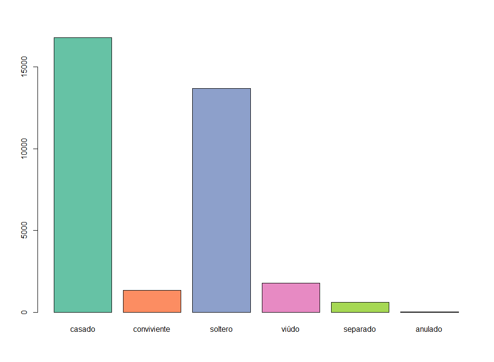

After opening a dictionary, you can execute a SPC command using
redatam_query
# Open NMIR database
dic<-redatam_open('path/to/nmiresp.rxdb')
# Run a frequency 'freq person.ecivil'
t<-redatam_query(dic, "freq person.ecivil")
colnames(t)<-c("code","label","value")
print(t)The output of the last command is:
## code label value
## 1 1 casado 16789
## 2 2 conviviente 1346
## 3 3 soltero 13676
## 4 4 viúdo 1781
## 5 5 separado 610
## 6 6 anulado 22As you can see, there are 3 columns in the generated dataframe:
- SEXO1_value (code)
- SEXO1_label (label)
- value (value)
We can also generate plot graphs, the RColorBrewer
package is used:
library(RColorBrewer) # for colors
coul <- brewer.pal(5, "Set2")
barplot(height=t$value, names=t$label, col=coul)
If you need to run a 2-dimensional table, you can execute a SPC
command using redatam.query. The next exmaple, run a
crosstab person.ecivil by person.sexo, next rename the
columns- of the generated dataframe, and finally print the
dataframe:
# Run a crosstab 'freq person.ecivil by person.sexo'
t2<-redatam_query(dic, "freq person.ecivil by person.sexo")
# rename the columns
colnames(t2)<-c("evalue","elabel","svalue","slabel","value")
# print the dataframe
print(t2)The output of the above example is:
## evalue elabel svalue slabel value
## 1 1 casado 1 Hombre 8386
## 2 1 casado 2 Mujer 8403
## 3 2 conviviente 1 Hombre 637
## 4 2 conviviente 2 Mujer 709
## 5 3 soltero 1 Hombre 7597
## 6 3 soltero 2 Mujer 6079
## 7 4 viúdo 1 Hombre 506
## 8 4 viúdo 2 Mujer 1275
## 9 5 separado 1 Hombre 249
## 10 5 separado 2 Mujer 361
## 11 6 anulado 1 Hombre 5
## 12Finally, if you need to make a crosstable, you can use R built-in functions:
t2_cross<-as.data.frame.matrix( xtabs(t2$value~t2$elabel+t2$slabel) )
# calculate totals
t2_cross<-cbind(t2_cross, Total=rowSums(t2_cross))
t2_cross<-rbind(t2_cross, Total=colSums(t2_cross))
# print the results
print(t2_cross)The output of the last command is:
## Hombre Mujer Total
## anulado 5 17 22
## casado 8386 8403 16789
## conviviente 637 709 1346
## separado 249 361 610
## soltero 7597 6079 13676
## viúdo 506 1275 1781
## Total 17380 16844 34224In the next block of code, you can find the whole program:
# load the Redatam package
library(redatam)
# open dictionary
dic<-redatam_open("path/to/nmiresp.rxdb")
# Run a crosstab 'freq person.ecivil by person.sexo'
t2<-redatam_query(dic, "freq person.ecivil by person.sexo")
# rename the columns
colnames(t2)<-c("evalue","elabel","svalue","slabel","value")
# make a cross-table
t2_cross<-as.data.frame.matrix( xtabs(t2$value~t2$elabel+t2$slabel) )
# calculate totals
t2_cross<-cbind(t2_cross, Total=rowSums(t2_cross))
t2_cross<-rbind(t2_cross, Total=colSums(t2_cross))
# print the results
print(t2_cross)Generate a pivot-table
We can use the pivottabler library for building a
crosstab. In the next exmaple, we generate a 3-dimensional Redatam
crosstab freq person.sexo by person.ecivil by person.alfab
and then generate a pivot-table:
# Run a crosstab 'req person.sexo by person.ecivil by person.alfab'
t3<-redatam_query(dic, "freq person.sexo by person.ecivil by person.alfab")
# rename the columns
colnames(t3)<-c("svalue", "slabel", "evalue", "elabel",
"avalue", "alabel", "value" )
# print the results
print(t3)The output of the last command is:
## svalue slabel evalue elabel avalue alabel value
## 1 1 Hombre 1 casado 1 Alfabeto 1540
## 2 1 Hombre 1 casado 2 Analfabeto 1452
## 3 1 Hombre 2 conviviente 1 Alfabeto 128
## 4 1 Hombre 2 conviviente 2 Analfabeto 132
## 5 1 Hombre 3 soltero 1 Alfabeto 650
## 6 1 Hombre 3 soltero 2 Analfabeto 949
## 7 1 Hombre 4 viúdo 1 Alfabeto 140
## 8 1 Hombre 4 viúdo 2 Analfabeto 195
## 9 1 Hombre 5 separado 1 Alfabeto 61
## 10 1 Hombre 5 separado 2 Analfabeto 46
## 11 1 Hombre 6 anulado 2 Analfabeto 1
## 12 2 Mujer 1 casado 1 Alfabeto 1384
## 13 2 Mujer 1 casado 2 Analfabeto 1307
## 14 2 Mujer 2 conviviente 1 Alfabeto 137
## 15 2 Mujer 2 conviviente 2 Analfabeto 161
## 16 2 Mujer 3 soltero 1 Alfabeto 411
## 17 2 Mujer 3 soltero 2 Analfabeto 548
## 18 2 Mujer 4 viúdo 1 Alfabeto 276
## 19 2 Mujer 4 viúdo 2 Analfabeto 474
## 20 2 Mujer 5 separado 1 Alfabeto 57
## 21 2 Mujer 5 separado 2 Analfabeto 68
## 22 2 Mujer 6 anulado 1 Alfabeto 3Next, you can generate a pivot-table using the
pivottabler package:
library(pivottabler) # for pivot tables
# generate the pivot table
pt = qpvt( t3, rows = c("slabel","elabel"), columns = "alabel", "sum(value)" )
# print the pivot table
print(pt)
# If you want to render the pivot table as a html-widgets, use
# qhpvt( t3, rows = c("slabel","elabel"), columns = "alabel", "sum(value)" )If you want to render the pivot table, please uncomment the last line of code
The output of the last command is a pivot table:
## Alfabeto Analfabeto Total
## Hombre anulado 1 1
## casado 1540 1452 2992
## conviviente 128 132 260
## separado 61 46 107
## soltero 650 949 1599
## viúdo 140 195 335
## Total 2519 2775 5294
## Mujer anulado 3 3
## casado 1384 1307 2691
## conviviente 137 161 298
## separado 57 68 125
## soltero 411 548 959
## viúdo 276 474 750
## Total 2268 2558 4826
## Total 4787 5333 10120Export to excel file
If you wnat to export to an EXCEL file, you can use the
openxlsx package:
library(openxlsx) # for writing excel files
wb <- createWorkbook(creator = Sys.getenv("USERNAME"))
addWorksheet(wb, "Data")
pt$writeToExcelWorksheet(wb=wb, wsName="Data",
topRowNumber=1, leftMostColumnNumber=1,
applyStyles=TRUE)
saveWorkbook(wb, file="C:/BASES/test.xlsx", overwrite = TRUE)In the next block of code, you can find the whole program that generates and export a pivot table:
library(redatam) # Redatam package
library(pivottabler) # for pivot tables
library(openxlsx) # for writing excel files
# open dictionary
dic<-redatam_open("path/to/nmiresp.rxdb")
# Run a crosstab 'req person.sexo by person.ecivil by person.alfab'
t3<-redatam_query(dic, "freq person.sexo by person.ecivil by person.alfab")
# rename the columns
colnames(t3)<-c("svalue", "slabel", "evalue", "elabel",
"avalue", "alabel", "value" )
# generate the pivot table
pt = qpvt( t3, rows = c("slabel","elabel"), columns = "alabel", "sum(value)" )
# export to excel
wb <- createWorkbook(creator = Sys.getenv("USERNAME"))
addWorksheet(wb, "Data")
pt$writeToExcelWorksheet(wb=wb, wsName="Data",
topRowNumber=1, leftMostColumnNumber=1,
applyStyles=TRUE)
saveWorkbook(wb, file="C:/BASES/test.xlsx", overwrite = TRUE)